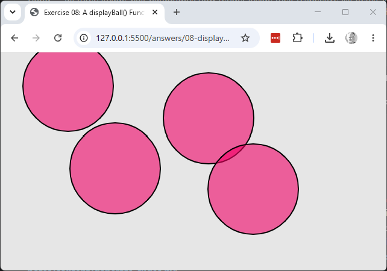

Explore & modify
Working copy: exercises/08-display-ball-function/.
- Add a
stroke()/outline to the ball by modifying onlydisplayBall()— confirmmousePressed()needs no changes at all for the ball to look different.

Working copy: exercises/08-display-ball-function/.
stroke()/outline to the ball by modifying only displayBall() — confirm
mousePressed() needs no changes at all for the ball to look different.